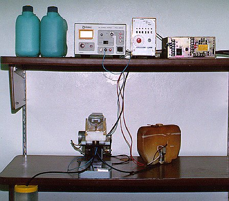
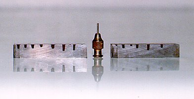

LMP>Research Guidelines>PROCESP>Micro-drilling by anodic dissolution
OBJECTIVESThe objective of this work is to develop a micro-drilling by anodic dissolution equipment and also to develop the process behavior knowledge by changing parameters. INTRODUCTIONThe materials anodic dissolution process is based on electrolysis where there is an atom-by-atom metal removal on an electrolytic cell. The process advantages are: the non-introduction of residual stresses and possibility of machining that is hard to do on common ways. The disadvantage is the limitation of only machining electricity conductor materials. PROCEDURESFirst, it was made the development and construction of a micro-drilling by anodic dissolution equipment prototype, simple and compact, see figure 1.  This equipment allows the variations of a few process parameters, work stress,
feed speed, electrolytic solution and electrolytic solution concentration. For process data collecting it was used equipment connected to a computer
where the data is stored and processed for further studies. The parameters
intended
to be studied on this second level and the ones that can potentially be studied
from the first level are: pH, temperature, electrolytic solution pressure and
flow. Then it can be made a deeper study of the process. RESULTSOn the first level of this work, fine results were obtained on assays. On those, there were obtained micro-holes, see figure 2, with diameter of about 1,7mm, with good wall circularity, parallelism and perpendicularism, and with rounded bottle. On the second level it is intended to improve even more the results obtained on the first level, obtaining a better micro-holes quality.

|
| Contact: PROCESP Walter Lindolfo Weingaertner Prof. Dr.-Ing |
Last update 06.07.2006 |